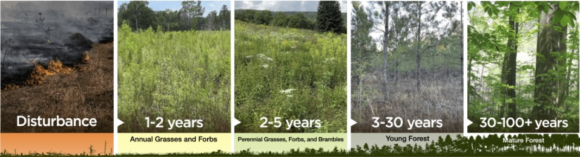

Definition & Overview
- Definition: The gradual and orderly process of change in an ecosystem over time. It involves the replacement of one community of organisms by another, more complex community.
- Dynamic Process: Ecosystems are not static; they are constantly changing in response to various factors.
- Climax Community: The final, stable, and self-sustaining community that develops at the end of succession. It's in equilibrium with the environment and resists further major change. 
Types of Ecological Succession
Primary Succession:
- Starts from scratch: Occurs in an area devoid of life and soil, where new land is exposed or created.
- Examples:
- Newly formed volcanic islands (lava flows cool and solidify).
- Recently exposed rock after a glacier retreats.
- New sand dunes.
- Pioneer Species: The first organisms to colonize these barren environments.
- Characteristics: Hardy, able to tolerate harsh conditions (lack of soil, nutrients, extreme temperatures).
- Examples: Lichens, mosses (often colonize bare rock, breaking it down to form initial soil).
- Process: Pioneer species colonize, begin to break down rock (physical and chemical weathering), add organic matter when they die, forming rudimentary soil. This makes the environment more hospitable for subsequent species.

Secondary Succession:
- Starts with existing soil: Occurs in an area where an existing community has been disturbed or removed, but the soil remains intact.
- Examples:
- Abandoned agricultural fields.
- Areas after a forest fire.
- Areas after a clear-cutting operation.
- Areas after a flood or hurricane.
- Faster than Primary Succession: Because soil and some seeds/spores are already present, the process is much quicker.
- Pioneer Species (in this context): Often grasses, weeds, and fast-growing annual plants that quickly colonize the disturbed area.
Stages of Succession (General)
While the specific species change, the pattern is similar:
- Pioneer Stage: Initial colonization by hardy species.
- Intermediate Stages (Seral Stages / Seral Communities):
- A series of temporary communities that gradually replace each other.
- Each stage modifies the environment, making it more suitable for the next stage's species.
- Increasing biodiversity, biomass, and complexity of food webs.
- Climax Community:
- The relatively stable, mature community.
- High biodiversity and complex food webs.
- Biomass and productivity are relatively stable.
- Resistant to minor disturbances.
Key Concepts & Terms
- Pioneer Species: First colonizers.
- Seral Stage/Community: Each transitional community in the successional sequence.
- Climax Community: Stable, mature end-stage.
- Facilitation: Early species modify the environment in ways that make it more suitable for later species. (e.g., lichens create soil for mosses).
- Inhibition: Some species hinder the establishment or growth of others.
- Tolerance: Later species are tolerant of conditions created by earlier species, or are simply not affected by them.
- Disturbance: Events that disrupt an ecosystem (e.g., fire, flood, human activity), often initiating secondary succession.
Factors Influencing Succession
- Climate: Temperature, rainfall determine the type of climax community (e.g., forest, grassland, desert).
- Topography: Slope, aspect (direction it faces).
- Soil
Written by Kasiban Parthipan